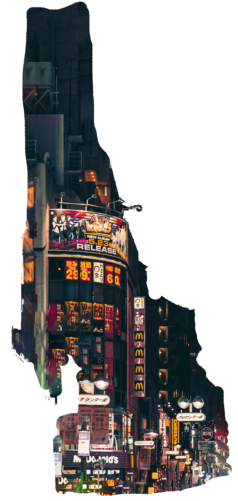
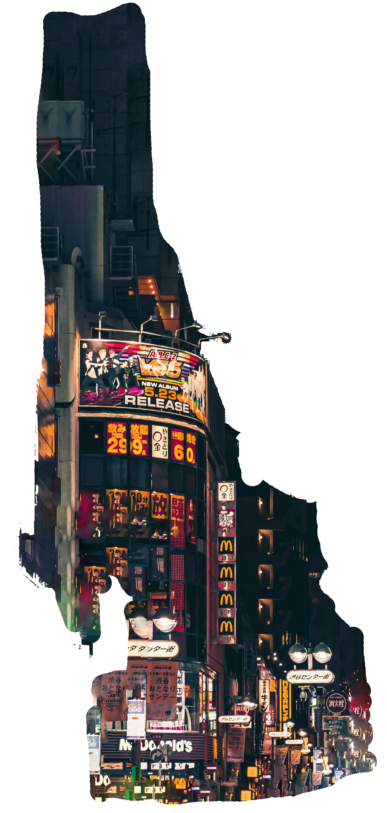

Fashion as a canvas
Exploring the art of self‑expression with Sam Henderson
When first impressions speak louder than words, fashion stands as a
universal language that transcends barriers of culture, language and
geography. Beyond the fabric and stitches, fashion serves as a
canvas on which individuals paint their identities, aspirations and
beliefs. Fashion isn't just about what we wear; it's about who we
are.
From the vibrant streets of Tokyo to the chic avenues of Paris,
fashion is a dynamic reflection of the society it inhabits. It
evolves with the times, mirroring shifts in culture, politics and
technology. Yet, at its core, fashion remains deeply personal – a
medium through which we articulate our individuality and ...
(read the full article here)